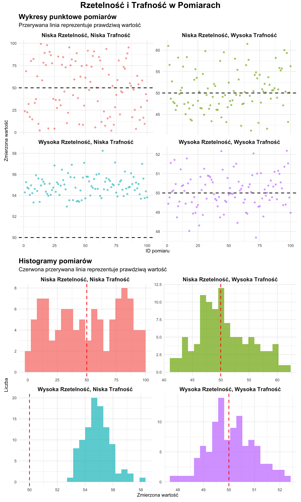
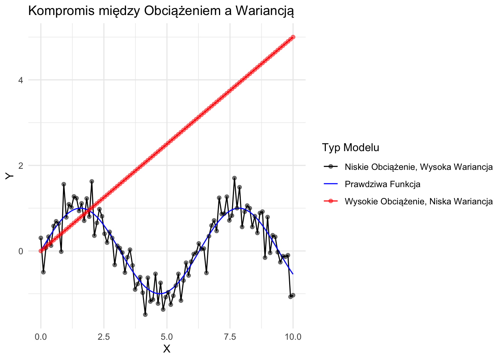
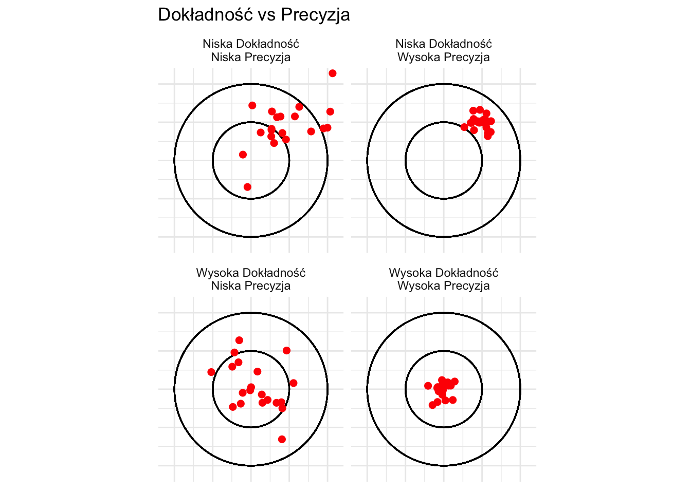

W naukach o danych i badaniach naukowych, dwa kluczowe pojęcia, które określają jakość pomiarów i badań, to rzetelność i trafność. Zrozumienie tych pojęć jest niezbędne do prowadzenia solidnych badań i wyciągania znaczących wniosków z danych.
8.1 Definiowanie Rzetelności i Trafności
Rzetelność odnosi się do spójności pomiaru. Rzetelny pomiar lub badanie daje podobne wyniki w spójnych warunkach.
Trafność odnosi się do dokładności pomiaru. Trafny pomiar lub badanie dokładnie reprezentuje to, co twierdzi, że mierzy.
8.2 Cztery Kombinacje Rzetelności i Trafności
Istnieją cztery możliwe kombinacje rzetelności i trafności:
Wysoka Rzetelność, Wysoka Trafność
Wysoka Rzetelność, Niska Trafność
Niska Rzetelność, Wysoka Trafność
Niska Rzetelność, Niska Trafność
Przyjrzyjmy się każdej z tych kombinacji z przykładami i wizualizacjami.
8.2.1 1. Wysoka Rzetelność, Wysoka Trafność
To idealny scenariusz w badaniach. Pomiary są zarówno spójne, jak i dokładne.
Przykład: Dobrze skalibrowana waga cyfrowa używana do pomiaru wagi. Konsekwentnie daje ten sam odczyt dla tego samego obiektu i dokładnie reprezentuje prawdziwą wagę.
8.2.2 2. Wysoka Rzetelność, Niska Trafność
W tym przypadku pomiary są spójne, ale niedokładne.
Przykład: Źle skalibrowana waga, która zawsze mierzy 5 kg za ciężko. Daje spójne wyniki (wysoka rzetelność), ale nie reprezentuje prawdziwej wagi (niska trafność).
8.2.3 3. Niska Rzetelność, Wysoka Trafność
Tutaj pomiary są dokładne średnio, ale niespójne.
Przykład: Waga, która waha się wokół prawdziwej wagi. Czasami pokazuje trochę więcej, czasami trochę mniej, ale średnio jest poprawna.
8.2.4 4. Niska Rzetelność, Niska Trafność
To najgorszy scenariusz, gdzie pomiary nie są ani spójne, ani dokładne.
Przykład: Zepsuta waga, która daje losowe odczyty niezwiązane z prawdziwą wagą.
8.3 Wizualizacja Rzetelności i Trafności
Aby lepiej zrozumieć te pojęcia, stwórzmy wizualizacje przy użyciu ggplot2 w R. Zasymulujemy dane pomiarowe dla każdego scenariusza i narysujemy je.
library(ggplot2)library(dplyr)library(tidyr)library(patchwork)set.seed(123)# Generowanie danych dla każdego scenariuszan <-100prawdziwa_wartosc <-50dane <-tibble(wysoka_rz_wysoka_tr =rnorm(n, mean = prawdziwa_wartosc, sd =1),wysoka_rz_niska_tr =rnorm(n, mean = prawdziwa_wartosc +5, sd =1),niska_rz_wysoka_tr =rnorm(n, mean = prawdziwa_wartosc, sd =5),niska_rz_niska_tr =runif(n, min =0, max =100)) %>%mutate(id =row_number()) %>%pivot_longer(cols =-id, names_to ="scenariusz", values_to ="pomiar")# Tworzenie wykresu punktowegowykres_punktowy <-ggplot(dane, aes(x = id, y = pomiar, color = scenariusz)) +geom_point(alpha =0.6, size =2) +geom_hline(yintercept = prawdziwa_wartosc, linetype ="dashed", color ="black", size =1) +facet_wrap(~ scenariusz, ncol =2, scales ="free_y",labeller =labeller(scenariusz =c("wysoka_rz_wysoka_tr"="Wysoka Rzetelność, Wysoka Trafność","wysoka_rz_niska_tr"="Wysoka Rzetelność, Niska Trafność","niska_rz_wysoka_tr"="Niska Rzetelność, Wysoka Trafność","niska_rz_niska_tr"="Niska Rzetelność, Niska Trafność" ))) +labs(title ="Wykresy punktowe pomiarów",subtitle ="Przerywana linia reprezentuje prawdziwą wartość",x ="ID pomiaru",y ="Zmierzona wartość") +theme_minimal(base_size =14) +theme(legend.position ="none",strip.text =element_text(size =16, face ="bold"),plot.title =element_text(size =20, face ="bold"),plot.subtitle =element_text(size =16))# Tworzenie histogramuwykres_hist <-ggplot(dane, aes(x = pomiar, fill = scenariusz)) +geom_histogram(bins =20, alpha =0.7) +geom_vline(xintercept = prawdziwa_wartosc, color ="red", linetype ="dashed", size =1) +facet_wrap(~ scenariusz, ncol =2, scales ="free",labeller =labeller(scenariusz =c("wysoka_rz_wysoka_tr"="Wysoka Rzetelność, Wysoka Trafność","wysoka_rz_niska_tr"="Wysoka Rzetelność, Niska Trafność","niska_rz_wysoka_tr"="Niska Rzetelność, Wysoka Trafność","niska_rz_niska_tr"="Niska Rzetelność, Niska Trafność" ))) +labs(title ="Histogramy pomiarów",subtitle ="Czerwona przerywana linia reprezentuje prawdziwą wartość",x ="Zmierzona wartość",y ="Liczba") +theme_minimal(base_size =14) +theme(legend.position ="none",strip.text =element_text(size =16, face ="bold"),plot.title =element_text(size =20, face ="bold"),plot.subtitle =element_text(size =16))# Łączenie wykresówwykres_polaczony <- wykres_punktowy / wykres_hist +plot_layout(heights =c(1, 1)) +plot_annotation(title ="Rzetelność i Trafność w Pomiarach",theme =theme(plot.title =element_text(hjust =0.5, size =24, face ="bold")) )# Wyświetlanie połączonego wykresuwykres_polaczony

8.3.1 Interpretacja Wizualizacji
Wysoka Rzetelność, Wysoka Trafność: Punkty grupują się ciasno wokół prawdziwej wartości (przerywana linia).
Wysoka Rzetelność, Niska Trafność: Punkty grupują się ciasno, ale konsekwentnie powyżej prawdziwej wartości.
Niska Rzetelność, Wysoka Trafność: Punkty rozpraszają się szeroko, ale centrują się wokół prawdziwej wartości.
Niska Rzetelność, Niska Trafność: Punkty rozpraszają się losowo bez wyraźnego wzoru lub relacji do prawdziwej wartości.
Zrozumienie rzetelności i trafności jest kluczowe w naukach o danych i badaniach. Wysoka rzetelność zapewnia spójne pomiary, podczas gdy wysoka trafność zapewnia dokładne reprezentacje tego, co zamierzamy zmierzyć. Biorąc pod uwagę oba aspekty, badacze mogą projektować bardziej solidne badania i wyciągać bardziej znaczące wnioski ze swoich danych.
Prowadząc własne badania lub analizując pracę innych, zawsze należy rozważyć: - Jak rzetelne są pomiary? - Jak trafne jest podejście do pomiaru zamierzonego pojęcia? - Czy stosowane metody wspierają zarówno rzetelność, jak i trafność?
Mając na uwadze te pytania, będziesz lepiej przygotowany do prowadzenia i interpretowania wysokiej jakości badań w naukach o danych.
8.4 Rodzaje Rzetelności
Rzetelność można oceniać na kilka sposobów, każdy skupiający się na innym aspekcie spójności:
Rzetelność test-retest: Mierzy spójność testu w czasie. Polega na przeprowadzeniu tego samego testu na tej samej grupie uczestników w różnych momentach i porównaniu wyników.
Rzetelność między oceniającymi: Ocenia stopień zgodności między różnymi oceniającymi lub obserwatorami. Jest kluczowa, gdy w zbieraniu danych biorą udział subiektywne osądy.
Spójność wewnętrzna: Ocenia, jak dobrze różne elementy testu lub skali mierzą ten sam konstrukt. Alfa Cronbacha jest powszechną miarą spójności wewnętrznej.
Rzetelność form równoległych: Polega na stworzeniu dwóch równoważnych form testu i przeprowadzeniu ich na tej samej grupie. Korelacja między dwoma zestawami wyników wskazuje na rzetelność.
8.5 Rodzaje Trafności
Trafność jest pojęciem wieloaspektowym, z kilkoma rodzajami, które badacze muszą wziąć pod uwagę:
Trafność treściowa: Zapewnia, że pomiar obejmuje wszystkie aspekty konstruktu, który ma mierzyć. Często jest oceniana przez osąd ekspertów.
Trafność konstrukcyjna: Ocenia, czy test mierzy zamierzony konstrukt teoretyczny. Obejmuje:
Trafność zbieżną: Stopień, w jakim pomiar koreluje z innymi pomiarami tego samego konstruktu.
Trafność różnicową: Zakres, w jakim pomiar nie koreluje z pomiarami różnych konstruktów.
Trafność kryterialną: Ocenia, jak dobrze pomiar przewiduje wynik. Obejmuje:
Trafność współbieżną: Jak dobrze pomiar koreluje z innymi pomiarami tego samego konstruktu w tym samym czasie.
Trafność predykcyjną: Jak dobrze pomiar przewiduje przyszłe wyniki.
Trafność fasadowa: Trafność fasadowa odnosi się do tego, jak osoby badane postrzegają test i czy uważają go za odpowiedni do celu, któremu ma służyć. Brak trafności fasadowej może mieć negatywne konsekwencje, nawet jeśli test jest faktycznie trafny (czyli mierzy to, co powinien mierzyć) z punktu widzenia jego zamierzonego celu. Choć nie jest to naukowa miara, może być ważna dla zaangażowania uczestników.
8.6 Trafność Wewnętrzna vs Zewnętrzna
Te pojęcia są kluczowe w projektowaniu eksperymentów i możliwości uogólniania wyników badań:
8.6.1 Trafność Wewnętrzna
Trafność wewnętrzna odnosi się do zakresu, w jakim badanie ustanawia związek przyczynowy między zmiennymi niezależnymi a zależnymi. Odpowiada na pytanie: “Czy eksperymentalne traktowanie rzeczywiście spowodowało zaobserwowane efekty?”
Czynniki, które mogą zagrażać trafności wewnętrznej, obejmują: - Historia: Zewnętrzne wydarzenia występujące między pre-testem a post-testem - Dojrzewanie: Naturalne zmiany u uczestników w czasie - Efekty testowania: Zmiany wynikające z przeprowadzenia pre-testu - Instrumentacja: Zmiany w narzędziu pomiarowym lub obserwatorach - Błąd selekcji: Nielosowy przydział do grup - Utrata: Utrata uczestników podczas badania
8.6.2 Trafność Zewnętrzna
Trafność zewnętrzna odnosi się do zakresu, w jakim wyniki badania mogą być uogólnione na inne sytuacje, populacje lub ustawienia. Odpowiada na pytanie: “W jakim stopniu wyniki mogą być zastosowane poza konkretnym kontekstem badania?”
Czynniki, które mogą wpływać na trafność zewnętrzną, obejmują: - Trafność populacyjna: Jak dobrze próba reprezentuje szerszą populację - Trafność ekologiczna: Jak dobrze ustawienie badania reprezentuje warunki świata rzeczywistego - Trafność czasowa: Czy wyniki pozostają prawdziwe w czasie
8.7 Spójność w Badaniach
Spójność jest ściśle związana z rzetelnością, ale wykracza poza sam pomiar. W badaniach spójność odnosi się do ogólnej koherencji i stabilności wyników w różnych kontekstach, metodach lub badaniach.
Kluczowe aspekty spójności w badaniach obejmują:
Replikowalność: Zdolność do odtworzenia wyników badania przy użyciu tych samych metod i danych.
Odporność: Stabilność wyników w różnych podejściach analitycznych lub niewielkich zmianach w metodologii.
Konwergencja: Zbieżność wyników z różnych badań lub metod badających to samo zjawisko.
Spójność długoterminowa: Stabilność wyników w czasie, szczególnie ważna w badaniach długoterminowych.
Zapewnienie spójności w badaniach obejmuje: - Stosowanie standaryzowanych procedur i miar - Dokładne dokumentowanie metod i decyzji analitycznych - Przeprowadzanie badań replikacyjnych - Meta-analizy w celu syntezy wyników z wielu badań
8.8 Równoważenie Rzetelności, Trafności i Spójności
Chociaż rzetelność, trafność i spójność są kluczowe dla wysokiej jakości badań, czasami wiążą się z kompromisami:
Wysoce rzetelna miara może nie mieć trafności, jeśli konsekwentnie mierzy niewłaściwą rzecz.
Dążenie do idealnej trafności wewnętrznej (np. w ściśle kontrolowanych eksperymentach laboratoryjnych) może zmniejszyć trafność zewnętrzną.
Zapewnienie wysokiej spójności w różnych kontekstach może wymagać poświęcenia pewnego stopnia precyzji lub głębi w konkretnych sytuacjach.
Badacze muszą starannie równoważyć te aspekty w oparciu o swoje pytania badawcze i charakter badania. Kompleksowe zrozumienie rzetelności, trafności i spójności pomaga w projektowaniu solidnych badań, dokładnej interpretacji wyników i znaczącym wkładzie do korpusu wiedzy naukowej.
8.9 Kompromis między Obciążeniem a Wariancją
Pojęcia rzetelności i trafności są ściśle związane ze statystycznym pojęciem kompromisu między obciążeniem a wariancją. Ten kompromis jest fundamentalny w uczeniu maszynowym i modelowaniu statystycznym.
Obciążenie odnosi się do błędu wprowadzonego przez przybliżenie problemu ze świata rzeczywistego uproszczonym modelem. Wysokie obciążenie może prowadzić do niedopasowania.
Wariancja odnosi się do błędu wprowadzonego przez wrażliwość modelu na małe fluktuacje w zbiorze treningowym. Wysoka wariancja może prowadzić do przeuczenia.
Zobrazujmy to pojęcie za pomocą uproszczonego wykresu:
x <-seq(0, 10, length.out =100)y_prawdziwa <-sin(x)y_niskie_obciazenie_wysoka_wariancja <- y_prawdziwa +rnorm(100, 0, 0.3)y_wysokie_obciazenie_niska_wariancja <-0.5* xdf <-data.frame(x =rep(x, 3),y =c(y_prawdziwa, y_niskie_obciazenie_wysoka_wariancja, y_wysokie_obciazenie_niska_wariancja),typ =rep(c("Prawdziwa Funkcja", "Niskie Obciążenie, Wysoka Wariancja", "Wysokie Obciążenie, Niska Wariancja"), each =100))ggplot(df, aes(x = x, y = y, color = typ)) +geom_line() +geom_point(data =subset(df, typ !="Prawdziwa Funkcja"), alpha =0.5) +scale_color_manual(values =c("black", "blue", "red")) +labs(title ="Kompromis między Obciążeniem a Wariancją",x ="X",y ="Y",color ="Typ Modelu") +theme_minimal()

Wizualizacja kompromisu między obciążeniem a wariancją
Na tym wykresie: - Czarna linia reprezentuje prawdziwą funkcję bazową. - Niebieskie punkty reprezentują model z niskim obciążeniem, ale wysoką wariancją. Średnio podąża blisko prawdziwej funkcji, ale ma dużo szumu. - Czerwona linia reprezentuje model z wysokim obciążeniem, ale niską wariancją. Konsekwentnie niedoszacowuje prawdziwej funkcji, ale ma mniej szumu.
8.10 Dokładność i Precyzja
Pojęcia dokładności i precyzji są ściśle związane z trafnością i rzetelnością:
Dokładność odnosi się do tego, jak blisko pomiar jest prawdziwej wartości (podobnie do trafności).
Precyzja odnosi się do tego, jak spójne lub powtarzalne są pomiary (podobnie do rzetelności).
Możemy zobrazować te pojęcia za pomocą uproszczonej analogii do tarczy:
library(ggplot2)library(ggforce)create_points <-function(n, x_center, y_center, spread) {data.frame(x =rnorm(n, x_center, spread),y =rnorm(n, y_center, spread) )}set.seed(101)points <-rbind(cbind(create_points(20, 0, 0, 0.1), type ="Wysoka Dokładność\nWysoka Precyzja"),cbind(create_points(20, 0.5, 0.5, 0.1), type ="Niska Dokładność\nWysoka Precyzja"),cbind(create_points(20, 0, 0, 0.3), type ="Wysoka Dokładność\nNiska Precyzja"),cbind(create_points(20, 0.5, 0.5, 0.3), type ="Niska Dokładność\nNiska Precyzja"))ggplot(points, aes(x, y)) +geom_circle(aes(x0 =0, y0 =0, r =1), color ="black", fill =NA) +geom_circle(aes(x0 =0, y0 =0, r =0.5), color ="black", fill =NA) +geom_point(color ="red", size =2) +facet_wrap(~type) +coord_fixed(xlim =c(-1.1, 1.1), ylim =c(-1.1, 1.1)) +theme_minimal() +theme(axis.text =element_blank(), axis.title =element_blank()) +labs(title ="Dokładność vs Precyzja")

Wizualizacja Dokładności vs Precyzji
W tej wizualizacji: - Wysoka dokładność oznacza, że punkty są blisko środka (dziesiątki). - Wysoka precyzja oznacza, że punkty są ściśle zgrupowane. - Każdy panel reprezentuje inną kombinację dokładności i precyzji.
8.11 Podsumowanie
Zrozumienie rzetelności i trafności jest kluczowe dla prowadzenia solidnych badań. Pojęcia te pomagają nam zapewnić, że nasze pomiary są zarówno spójne, jak i dokładne. Łącząc je z ideami takimi jak kompromis między obciążeniem a wariancją oraz dokładnością i precyzją, zyskujemy głębsze zrozumienie wyzwań związanych z pomiarem i modelowaniem w badaniach naukowych. Jako badacze musimy dążyć do opracowania miar i modeli, które są zarówno rzetelne, jak i trafne, równoważąc kompromisy między obciążeniem a wariancją oraz między dokładnością a precyzją. Wymaga to starannego projektowania metodologii badań, rygorystycznego testowania naszych instrumentów pomiarowych i przemyślanej interpretacji naszych wyników.
8.12 Zrozumienie Obciążenia vs. Wariancji w Pomiarach Statystycznych
8.12.1 Wprowadzenie
W statystyce i uczeniu maszynowym dwa ważne pojęcia, które wpływają na wydajność naszych modeli, to obciążenie (bias) i wariancja (variance). Zrozumienie tych pojęć jest kluczowe dla budowania efektywnych modeli predykcyjnych i unikania typowych pułapek, takich jak przeuczenie i niedouczenie.
Obciążenie odnosi się do błędu wprowadzonego przez przybliżenie rzeczywistego problemu, który może być złożony, za pomocą uproszczonego modelu. Wysokie obciążenie może prowadzić do niedouczenia.
Wyobraź sobie obciążenie jako średnią odległość naszych przewidywań od prawdziwych wartości.
W kontekście trafności, wysokie obciążenie oznacza, że nasz model nie uchwycił prawdziwej zależności w danych.
Wariancja odnosi się do tego, jak bardzo nasz model zmieniłby się, gdybyśmy oszacowali go przy użyciu innego zbioru treningowego. Wysoka wariancja może prowadzić do przeuczenia.
Wyobraź sobie wariancję jako to, jak bardzo nasze przewidywania wahałyby się, gdybyśmy użyli różnych zbiorów danych.
W kontekście rzetelności, wysoka wariancja oznacza, że nasz model jest zbyt wrażliwy na konkretne dane, na których został wytrenowany.
Zbadamy cztery scenariusze, aby zilustrować różne kombinacje obciążenia i wariancji przy użyciu syntetycznych danych i modeli regresji.
8.12.2 Funkcja Generowania Danych i Dopasowywania Modelu
Najpierw stwórzmy funkcję, która pomoże nam generować dane i dopasowywać modele dla każdego scenariusza:
generuj_i_dopasuj <-function(n, wyraz_wolny, nachylenie, odch_szumu, stopien_modelu) {# Generowanie syntetycznych danych x <-runif(n, 0, 10) y <- wyraz_wolny + nachylenie * x +rnorm(n, 0, odch_szumu)# Dopasowanie modelu formula <-as.formula(paste("y ~", paste0("poly(x, ", stopien_modelu, ", raw = TRUE)"))) model <-lm(formula, data =data.frame(x, y))# Generowanie przewidywań x_pred <-seq(0, 10, length.out =100) y_pred <-predict(model, newdata =data.frame(x = x_pred))# Wykresggplot(data.frame(x, y), aes(x, y)) +geom_point(alpha =0.5) +geom_line(data =data.frame(x = x_pred, y = y_pred), color ="red", size =1) +geom_abline(intercept = wyraz_wolny, slope = nachylenie, color ="blue", linetype ="dashed") +labs(title =paste("Stopień Modelu:", stopien_modelu),subtitle =paste("Odchylenie Standardowe Szumu:", odch_szumu),x ="X (Zmienna Wejściowa)",y ="Y (Zmienna Docelowa)") +theme_minimal() +theme(plot.title =element_text(hjust =0.5),plot.subtitle =element_text(hjust =0.5))}
Ta funkcja wykonuje następujące czynności: 1. Generuje syntetyczne dane na podstawie naszych parametrów 2. Dopasowuje model regresji wielomianowej 3. Tworzy wykres pokazujący prawdziwą zależność (niebieska przerywana linia), przewidywania naszego modelu (czerwona ciągła linia) i punkty danych
Wyjaśnienie: - Model (czerwona linia) ściśle podąża za prawdziwą zależnością (niebieska przerywana linia). - Punkty danych są skupione blisko linii, co wskazuje na niski szum. - Ten scenariusz reprezentuje dobre dopasowanie: model uchwycił podstawowy trend bez nadmiernej złożoności.
Wyjaśnienie: - Model nadal uchwycił ogólny trend, ale punkty danych są bardziej rozproszone. - Ta wysoka wariancja oznacza, że przewidywania naszego modelu byłyby mniej wiarygodne. - W rzeczywistych warunkach mogłoby to reprezentować sytuację, w której nasze pomiary są średnio poprawne, ale mają dużo losowego błędu.
8.13.1 Scenariusz 3: Wysokie Obciążenie, Niska Wariancja
W tym przypadku używamy modelu liniowego do dopasowania danych kwadratowych (zakrzywionych) z niskim szumem.
Wyjaśnienie: - Model liniowy (czerwona linia) nie uchwycił krzywizny prawdziwej zależności (niebieska przerywana linia). - To wysokie obciążenie oznacza, że nasz model konsekwentnie myli się w swoich przewidywaniach. - W rzeczywistych warunkach mogłoby to reprezentować użycie zbyt uproszczonego modelu dla złożonego zjawiska.
8.13.2 Scenariusz 4: Wysokie Obciążenie, Wysoka Wariancja
Na koniec używamy wielomianu wysokiego stopnia do dopasowania danych liniowych z wysokim szumem.
Wyjaśnienie: - Model (czerwona linia) jest zbyt złożony, próbując dopasować się do szumu zamiast do podstawowego trendu. - Ta kombinacja wysokiego obciążenia i wysokiej wariancji prowadzi do słabej generalizacji. - W rzeczywistych warunkach mogłoby to reprezentować nadmierne skomplikowanie naszej analizy i wyciąganie fałszywych wniosków z losowych fluktuacji w naszych danych.
8.13.3 Podsumowanie
Zrozumienie kompromisu między obciążeniem a wariancją jest kluczowe w modelowaniu statystycznym:
Niskie Obciążenie, Niska Wariancja: Idealny scenariusz, w którym nasz model dokładnie uchwycił podstawową zależność bez nadmiernej wrażliwości na szum.
Niskie Obciążenie, Wysoka Wariancja: Nasz model jest średnio poprawny, ale niewiarygodny ze względu na wysoką wrażliwość na pojedyncze punkty danych.
Wysokie Obciążenie, Niska Wariancja: Nasz model jest konsekwentnie błędny z powodu nadmiernego uproszczenia, ale daje stabilne przewidywania.
Wysokie Obciążenie, Wysoka Wariancja: Najgorszy scenariusz, w którym nasz model jest zarówno niedokładny, jak i niewiarygodny.
W praktyce często musimy zrównoważyć obciążenie i wariancję. Techniki takie jak walidacja krzyżowa, regularyzacja i metody zespołowe mogą pomóc w znalezieniu tej równowagi.
Pamiętaj: - Model z wysokim obciążeniem jest zbyt prosty i pomija ważne wzorce w danych. - Model z wysoką wariancją jest zbyt złożony i dopasowuje się do szumu w danych treningowych. - Celem jest znalezienie złotego środka, który uchwyci prawdziwe wzorce bez nadmiernego dopasowania do szumu.
Zrozumienie tych pojęć pomoże ci lepiej wybierać odpowiednie modele, unikać przeuczenia i niedouczenia oraz budować bardziej efektywne modele predykcyjne w przyszłych analizach statystycznych!